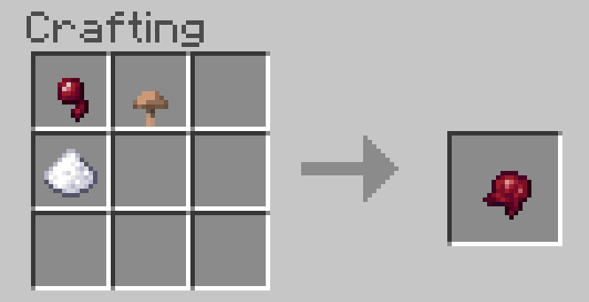

Sur cette page, je vais vous aprendre comment faire des qui vont porter sur le déplacement.
La première potion que nous allons créer est la potion de vitesse, elle va augmenter la vitesse de déplacement de votre personnage
Tout d'abord, pour pouvoir faire une potion de vitesse, il vous faut du sucre
Comment en obtenir ? C'est très simple
Pour avoir du sucre, il faudra récolter de la canne à sucre qui se trouve plus à coté de certaines rivières, après avoir récolté la canne à sucre, utilisez la table de craft pour pouvoir faire du sucre
Après avoir récupérer du sucre, vous devrez, dans votre alambic, utiliser la poudre de blaze en la posant au-dessus à gauche comme ci-dessous

Ensuite vous devrez poser des fioles rempli d'eau dans les 3 petites cases en dessous et poser une verrue du Nether sur la case d'en haut comme cela
Après tout cela, vous devrez mettre votre sucre sur la case en haut la où vous avez posé votre verrue du nether précedemment comme ceci
Et voilà ! Vous venez de créer votre potion de vitesse, mais ce n'est pas fini.
Il y a certains matériaux utilisable pour toute les potions.
Tout d'abord, vous posez de la redstone sur la case d'au dessus, cela va allonger la durée de la potion.
Et le dernier item est la poudre lumineuse, cela fera passer votre potion au niveau 2. Pour en obtenir, il faut aller dans le nether et casser des blocks de Glowstone, très simple
Après avoir obtenu de la poudre lumineuse, vous la posez sur la case d'en haut comme pour la redstone.
Et voilà, maintenant vous pouvez crér des potions de vitesse, avec ou sans améliorations !
Maintenant nous allons créer la potion de lenteur, elle aura pour but de ralentir vos adversaires.
Pour pouvoir fabriquer une potion de lenteur, c'est très simple, vous devez créer une potion de vitesse sans améliorations, mais ce n'est pas tout, il vous faudra aussi un oeil d'araignée fermenté qui se fabrique comme ci-dessous
Ensuite vous devrez poser l'oeil sur la case au dessus pour que les potions de vitesse deviennent des potions de lenteur comme cela
Enfin, je vous conseille d'en faire une potion jetable, comment faire ? Il vous faudra de la poudre à canon qui s'obtient en tuant des creepers
Posez donc la poudre à canon dans la case au desssus pour obtenir votre potion de lenteur jetable
Et voilà ! Vous avez fini la création de votre potion de lenteur, bien sur vous pouvez les améliorer avec la poudre lumineuse et la redstone !
La potion de saut va augmenter la "hauteur" de votre saut effectué
Pour votre potion il vous faudra une patte de lapin, pour l'obtenir, il faudra juste tuer un lapin
Après avoir obtenu la patte de lapin, posez la sur la case d'en haut comme d'habitude.
Et voilà ! Vous avez terminé la création de votre potion de saut
Et la dernière potion est la potion de chute lente, elle ralentira la vitesse de votre chute et retirera les dégats de chute
Pour cela, il vous faudra une membrane de phatom qui s'obtient en tuant un phantom, ce qui est très chiant
Après avoir obtenu la membrane, vous pouvez la poser sur la case du dessus
Et voilà ! Maintenant vous savez créer toute les potions qui portent sur le déplacement